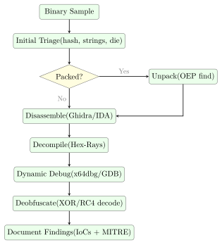

Chapter 21: Reverse Engineering¶
Reverse engineering (RE) is the process of recovering design, architecture, and implementation details from a compiled binary when source code is unavailable. It underpins malware analysis, vulnerability research, CTF competitions, interoperability work, and software auditing. This chapter covers the foundational skills: assembly comprehension, tool selection, anti-analysis bypass, deobfuscation, and cryptographic identification.
The progression in this chapter follows the natural workflow of a practising analyst—starting with static techniques, moving to dynamic debugging, then tackling the anti-analysis obstacles that real-world samples erect along the way.
21.1 Assembly and Calling Conventions¶
Definition 21.1 (x86-64 System V AMD64 ABI (Linux))
On 64-bit Linux, function arguments are passed in registers in order: RDI, RSI, RDX, RCX, R8, R9. Additional arguments are pushed on the stack right-to-left. The return value is in RAX (or RAX:RDX for 128-bit). Caller-saved registers: RAX, RCX, RDX, RSI, RDI, R8--R11. Callee-saved: RBX, RBP, R12--R15.
Definition 21.2 (Microsoft x64 Calling Convention (Windows))
Windows 64-bit passes the first four arguments in RCX, RDX, R8, R9; remaining arguments go on the stack. The callee must allocate a 32-byte “shadow space” above the return address for the four register arguments. RAX carries the return value. Callee-saved: RBX, RBP, RDI, RSI, R12--R15.
Example 21.1 (Function Prologue and Epilogue)
; Function prologue (standard frame setup)
push rbp ; save caller's base pointer
mov rbp, rsp ; establish new stack frame
sub rsp, 0x40 ; allocate 64 bytes of local storage
; ... function body ...
; Function epilogue (frame teardown)
mov rsp, rbp ; restore stack pointer
pop rbp ; restore caller's base pointer
ret ; pop return address, jump to caller
; Leaf function (no local variables, no calls): omits frame setup
; Common in highly optimised or obfuscated code
21.2 Disassembly vs. Decompilation¶
Definition 21.3 (Disassembly)
Disassembly converts machine code bytes into human-readable assembly mnemonics. It operates at the instruction level and is always possible for any binary. Linear-sweep disassembly (objdump) decodes bytes sequentially; recursive-descent disassembly (IDA, Ghidra) follows control flow and handles indirect jumps more accurately.
Definition 21.4 (Decompilation)
Decompilation reconstructs high-level language constructs (C pseudocode) from disassembly by inferring variable types, data structures, loops, and function signatures. Output quality depends on compiler optimisation level and obfuscation. IDA Pro’s Hex-Rays decompiler and Ghidra’s built-in decompiler are the two most capable tools.
21.2.1 IDA Pro vs. Ghidra vs. Binary Ninja¶
Choosing a disassembler shapes your entire workflow, so it is worth understanding the trade-offs before committing to one.
IDA Pro remains the industry benchmark. Its processor module library covers obscure embedded architectures (AVR, MIPS microcontrollers, obscure DSPs) that the others lack, and its autoanalysis heuristics—FLIRT signature matching, stack variable naming, struct propagation—are the most mature. The Hex-Rays decompiler plug-in produces the cleanest pseudo-C output for x86-64 and ARM64 and supports interactive type-editing that propagates across the database. The downside is cost: a floating IDA Pro licence with Hex-Rays runs tens of thousands of dollars per seat, which puts it out of reach for individuals and small teams.
Ghidra, released by the NSA in 2019, closed most of that gap for free. Its built-in decompiler handles most common architectures well, and the collaborative server mode—a feature IDA lacks natively—lets a team share an analysis database in real time, which is invaluable for large firmware images. The extension API (Java and Python) is well-documented, and community plugins now cover everything from YARA scanning to Golang symbol recovery. The main practical complaint is the Java runtime: startup is slower than IDA’s, and the GUI can feel sluggish on large binaries.
Binary Ninja occupies a middle ground. Its API is the most developer-friendly of the three—a clean Python/Rust API with a headless mode that makes it easy to write analysis scripts that run in CI without a GUI. It introduces a multi-level intermediate language (LLIL, MLIL, HLIL) that progressively lifts machine code toward high-level constructs, giving scripted analyses stable representations to work against. It’s the tool of choice when you need to automate triage over hundreds of firmware samples rather than deeply analyse a single binary.
All three produce decompiled pseudo-C output, support YARA-based search, and can import type information from PDB or DWARF. For most practitioners the realistic choice is Ghidra for daily use supplemented by a trial or team IDA licence for cases where Hex-Rays quality matters.
| Tool | Platform | Cost | Decompiler | Strengths |
|---|---|---|---|---|
| IDA Pro | Win/Lin/Mac | Commercial | Hex-Rays (extra) | Industry standard; scripting; FLIRT |
| Ghidra | All | Free (NSA) | Built-in | Open-source; team collab; plugins |
| Binary Ninja | Win/Lin/Mac | Commercial | Built-in | Modern API; headless mode; MLIL |
| Hopper | Mac/Linux | Commercial | Built-in | Lightweight; good for macOS/iOS |
| Radare2 | All | Free | r2dec/rz-ghidra | CLI; scriptable; CTF-friendly |
| x64dbg | Windows | Free | No (debugger) | Best Windows debugger; plugin-rich |
21.3 Static Analysis Techniques¶
Static Analysis Workflow
-
Import analysis: identify DLLs and API calls; network functions (
WSAConnect,InternetOpenA) indicate C2; crypto functions (CryptEncrypt) indicate payload encryption. -
String references: locate plaintext IoCs (URLs, registry keys, mutex names, error messages).
-
Cross-references (XREFs): find all callers of a function or all references to a string/global variable.
-
Control flow graph (CFG): visualise conditional branches and loops to understand decision logic.
-
Function signatures: use FLIRT (IDA) or Ghidra’s Function ID to auto-name statically linked library code.
Static analysis is the starting point for any sample. It costs nothing—no sandbox, no network access, no risk of detonating a live payload—and often reveals the majority of what you need to know before a single instruction executes.
21.3.1 Binary Diffing¶
When a vendor ships a security patch, the fixed binary is often public before most operators have deployed it. BinDiff (Google) and Diaphora (an open-source alternative that runs inside IDA and Ghidra) compare two binary versions function-by-function, scoring structural similarity using isomorphic subgraph matching on the control flow graph. Functions that changed between the pre-patch and post-patch builds surface immediately—the changed function is almost always where the vulnerability lived.
The workflow is straightforward: open both binaries in IDA, export the .i64 database files, then run BinDiff to produce a ranked similarity report. Functions scoring below around 0.8 similarity warrant close inspection. Diffing against a build that includes public debug symbols (PDB files or split DWARF) has a secondary benefit: BinDiff matches named functions from the debug build against the stripped release binary, letting you propagate names like handle_request or parse_header across without manually identifying each one. This dramatically reduces the time spent on standard library routines—once memcpy or sprintf is named, you can skip those call sites and focus on application logic.
Diaphora extends BinDiff’s approach with heuristics such as cyclomatic complexity matching, prime hash comparison of basic-block mnemonics, and pseudo-code diffing. It exports results as an SQLite database, which makes scripted querying straightforward. For CTF patch-diffing challenges, Diaphora’s SAME_MD_INDEX category (identical basic-block hash sequences) lets you skip unmodified functions entirely.
21.4 Dynamic Analysis with Debuggers¶
Where static analysis answers what is in the binary, dynamic analysis answers how it behaves. A debugger lets you pause execution at any instruction, inspect register state and memory, and patch values on the fly.
# Install GEF (GDB Enhanced Features)
pip3 install gef
echo "source /path/to/gef.py" >> ~/.gdbinit
# Attach to running process
gdb -p $(pgrep malware_sample)
# Set breakpoint at function entry by name or address
(gdb) break *0x401337
(gdb) break malloc
# Run and examine state at breakpoint
(gdb) run
(gdb) info registers # show all registers
(gdb) x/20wx $rsp # hex dump 20 words from stack pointer
(gdb) x/s $rdi # print string at RDI (first argument)
# Step through code
(gdb) ni # next instruction (step over calls)
(gdb) si # step into calls
(gdb) finish # run until return from current function
# GEF: enhanced heap and memory views
(gdb) heap chunks # display heap allocations
(gdb) pattern create 200 # generate cyclic pattern for offset finding
21.5 Anti-Analysis Techniques¶
Most production malware includes some form of anti-analysis. The analyst’s job is to recognise these obstacles and bypass them without spending more time than the sample is worth.
21.5.1 Anti-Disassembly¶
Definition 21.5 (Opaque Predicates)
Opaque predicates are conditional branches whose outcome is always known to the author (always-true or always-false) but appears data-dependent to a static analyser. The false branch is filled with junk bytes that cause disassemblers to misinterpret subsequent legitimate code. A typical example: cmp eax, eax; jz legitimate_code with garbage bytes between the jz and legitimate_code.
21.5.2 Anti-Debugging¶
#include <windows.h>
// Technique 1: IsDebuggerPresent API check
BOOL check_debugger_api(void) {
return IsDebuggerPresent(); // returns TRUE if debugger attached
}
// Technique 2: PEB.BeingDebugged flag (same as above, lower level)
BOOL check_peb(void) {
// Reads PEB!BeingDebugged at offset 0x2 (x64: gs:[0x60]+2)
BOOL dbg;
__asm__ (
"movq
"movzbl 0x2(
: "=r"(dbg) : : "rax"
);
return dbg;
}
// Technique 3: Timing check (RDTSC delta)
BOOL check_timing(void) {
unsigned long long t1, t2;
__asm__ volatile ("rdtsc" : "=A"(t1));
// ... perform some work ...
__asm__ volatile ("rdtsc" : "=A"(t2));
return (t2 - t1) > 1000000ULL; // threshold exceeded -> debugger
}
/* -------------------------------------------------------
BYPASS: In x64dbg, set software breakpoint at the
IsDebuggerPresent call, then:
Option A: after call returns, manually set RAX = 0
Option B: NOP out the conditional jump that follows:
JNZ 0x401234 -> NOP NOP (0x90 0x90)
Option C: Use ScyllaHide plugin (hides debugger
from all common detection methods)
------------------------------------------------------- */
Deeper Anti-Debugging Techniques and Bypasses¶
The IsDebuggerPresent() API call is just the surface of a much larger catalogue. Experienced malware authors layer multiple checks so that disabling one leaves others intact.
The NtGlobalFlag check reads a DWORD at offset 0xBC from the Process Environment Block (PEB). Under a debugger, Windows sets flags 0x70 (heap tail checking, free checking, and parameter checking), whereas a non-debugged process has this field set to zero. Reading it with inline assembly is a single instruction and adds no import entry that a scanner would flag.
Timing checks exploit the fact that a debugger introduces measurable latency. The RDTSC instruction reads the processor’s timestamp counter, which increments billions of times per second. Malware calls RDTSC twice around a trivial code block, subtracts the values, and treats a delta above a threshold as evidence of single-stepping. On a modern CPU without a debugger, a handful of instructions completes in under 100 cycles; a human single-stepping in x64dbg takes millions.
Exception-based detection places a deliberate INT3 (opcode 0xCC) in the code stream. Under normal execution, the CPU raises an exception that the application’s own vectored exception handler catches and handles—execution continues normally. If a debugger is attached, it intercepts the INT3 first and pauses execution, which the exception handler detects because the exception never arrived.
Bypassing these requires more than NOPing a single check:
-
Hardware breakpoints (DR0–DR3 registers) do not modify the code stream, so they avoid
INT3-based detection and do not affect timing checks the way software breakpoints do. -
ScyllaHide is an x64dbg plugin that patches the TEB, PEB, and relevant kernel structures to hide the debugger from
IsDebuggerPresent, NtGlobalFlag,NtQueryInformationProcess, heap flags, and several other common check points simultaneously. It also spoofs the RDTSC delta to a plausible non-debugged value. -
For samples that check their own code bytes for
0xCC(software breakpoint bytes), hardware breakpoints combined with ScyllaHide cover the typical attack surface.
21.5.3 Anti-VM Detection¶
// Check for VMware registry key
BOOL check_vmware_registry(void) {
HKEY hKey;
return RegOpenKeyExA(HKEY_LOCAL_MACHINE,
"SOFTWARE\\VMware, Inc.\\VMware Tools",
0, KEY_READ, &hKey) == ERROR_SUCCESS;
}
// Check CPUID hypervisor bit (bit 31 of ECX with leaf 1)
BOOL check_hypervisor_bit(void) {
unsigned int ecx = 0;
__asm__ ("cpuid" : "=c"(ecx) : "a"(1) : "ebx", "edx");
return (ecx >> 31) & 1; // hypervisor present bit
}
/* Bypass: patch conditional jump; or run on bare metal;
or use al-khaser sandbox detection bypass tools */
21.6 Symbolic Execution with angr¶
Static analysis tells you what code exists; dynamic debugging tells you what one execution path does. Symbolic execution explores all feasible execution paths simultaneously by treating program inputs as symbolic variables rather than concrete values. At each conditional branch, the engine forks into two states—one where the condition is true, one where it is false—and a constraint solver (typically Z3) accumulates the path conditions that must hold for each state to be reachable.
angr is the dominant Python-based symbolic execution framework for binary analysis. Its Project object loads an ELF, PE, or raw binary; a SimulationManager then drives exploration across states.
import angr, claripy
# Load a 64-bit ELF (disable auto-loading of shared libs for speed)
project = angr.Project('./crackme', auto_load_libs=False)
# Create a symbolic stdin: 16 symbolic bytes labelled 'flag'
flag_chars = [claripy.BVS(f'flag_{i}', 8) for i in range(16)]
flag = claripy.Concat(*flag_chars)
# Constrain to printable ASCII (optional, reduces search space)
state = project.factory.entry_state(stdin=angr.SimFile(
name='stdin', content=flag, size=16))
for ch in flag_chars:
state.solver.add(ch >= 0x20, ch <= 0x7e)
simgr = project.factory.simulation_manager(state)
# explore(find=...) halts states that reach the target address
# explore(avoid=...) prunes states that reach the failure path
simgr.explore(find=0x401234, avoid=[0x401500, 0x401600])
if simgr.found:
winning_state = simgr.found[0]
# Evaluate the symbolic stdin to get the concrete solution
solution = winning_state.solver.eval(flag, cast_to=bytes)
print(f"[+] Solution: {solution}")
The explore API drives the simulation manager until at least one state reaches the find address (success) while pruning any state that steps into an avoid address (failure path, e.g., a “Wrong password!” print). In a CTF crackme, this pattern typically solves the challenge in seconds—the solver produces the exact byte sequence that satisfies every branch condition on the path to the success print.
21.6.1 State Explosion and Veritesting¶
The fundamental weakness of symbolic execution is path explosion: a loop that iterates \(n\) times with a branch inside doubles the state count on each iteration, producing \(2^{n}\) states. A simple 32-iteration loop generates over four billion states, which exhausts both time and memory.
Veritesting (Avgerinos et al., 2014) mitigates this by automatically merging paths that reconverge after a conditional block. Instead of maintaining separate states for both branches of an if/else, Veritesting encodes the branch outcome as a conditional expression in the single merged state’s constraint set, then splits again only when paths truly diverge into irreconcilable control flow. angr implements Veritesting via the veritesting=True option on the simulation manager.
Other practical mitigations include under-constrained symbolic execution—running a single function in isolation with unconstrained inputs—and concolic execution (SAGE, DART), which runs concrete inputs through the binary while simultaneously tracking symbolic constraints, using coverage gaps to generate new concrete test cases. For large real-world binaries, these hybrid approaches are often more productive than pure symbolic exploration.
21.7 Unpacking: Finding the OEP¶
Definition 21.6 (Original Entry Point (OEP))
Packers encrypt or compress the original executable and add a stub that decompresses/decrypts the payload at runtime before transferring control to the OEP. Finding the OEP is the key step in unpacking:
-
Load packed binary in x64dbg; note entry point (packer stub).
-
Set hardware breakpoint on memory write to
.textsection (will trigger during decompression). -
Allow packer to run until decompression completes.
-
At OEP, the code resembles a normal function prologue.
-
Dump process memory and fix import table with Scylla plugin.
21.7.1 Packer Analysis and Import Reconstruction¶
Understanding the packer is as important as finding the OEP. Every packed binary follows the same high-level pattern: a stub runs first, it decompresses or decrypts the original code into a new memory region, then it transfers control to the OEP. What varies is the complexity of the stub.
UPX is trivially unpacked—the command upx -d target.exe restores the original binary in seconds. UPX is so well-known that antivirus products flag it immediately; any sample using UPX is usually the outer layer of a multi-stage dropper, not the final payload.
Custom packers require manual analysis. The tell-tale signs at load time are: the binary has few or no readable imports (often only LoadLibrary and GetProcAddress), the PE sections have names like .mpress, .pack, or randomised strings, and the entry point sits in a section marked with execute, read, and write permissions—unusual for legitimate code because writable executable memory is a red flag. The stub uses VirtualAlloc to allocate the unpacked region, writes the decompressed PE into it, then patches its own import table by calling GetProcAddress for each imported function before jumping to the OEP.
The unpacking workflow in x64dbg proceeds as follows. After attaching, set a hardware breakpoint (ba w4) on the beginning of the .text section—this fires when the stub writes the decompressed code. Allow execution to continue; the breakpoint will trigger mid-decompression. Step through until the decompression loop finishes and the stub performs a long jump (jmp eax or push eax; ret) into the freshly written region—that target address is the OEP.
Import reconstruction is the final step. The unpacked image in memory has a valid code section but a broken or empty import table, because the original Import Address Table (IAT) was stripped. The Scylla plugin for x64dbg handles this automatically: point it at the OEP, click “IAT Autosearch”, and it walks the code looking for indirect calls through a table of function pointers, then resolves each pointer back to the originating DLL export. “Dump” writes the unpacked PE to disk and “Fix Dump” patches the import table into the new file, producing a fully functional reconstructed binary that IDA or Ghidra can analyse without the packer stub overhead.
Recognising the decompression algorithm helps predict what to expect. LZ-family (LZMA, aPLib) produce expanding output; AES-CBC decryption produces equal-size output with a 16-byte-aligned ciphertext block. Entropy scanning (detect-it-easy, PEiD) gives a quick fingerprint before you invest time in manual analysis.
21.8 Deobfuscation: XOR Decoding¶
XOR encoding is the most common obfuscation primitive in malware. It’s fast to implement, trivially reversible, and works on any payload. Frequency analysis cracks single-byte and short repeating keys in seconds.
import sys
def find_xor_key(data: bytes, key_length: int) -> bytes:
"""
Recover repeating XOR key using frequency analysis.
Assumes the plaintext is ASCII with high frequency of 0x00 / spaces.
"""
key = bytearray(key_length)
for i in range(key_length):
# Collect every key_length-th byte
chunk = bytes(data[j] for j in range(i, len(data), key_length))
# Most frequent byte XOR'd with 0x00 gives the key byte
freq = max(range(256), key=lambda b: chunk.count(bytes([b])))
key[i] = freq # assuming plaintext 0x00 most common (or use ' ')
return bytes(key)
def xor_decode(data: bytes, key: bytes) -> bytes:
return bytes(b ^ key[i
if __name__ == "__main__":
with open(sys.argv[1], "rb") as f:
payload = f.read()
# Try known key lengths (1-16 bytes)
for klen in range(1, 17):
key = find_xor_key(payload, klen)
decoded = xor_decode(payload, key)
printable = sum(32 <= b < 127 for b in decoded)
score = printable / len(decoded)
if score > 0.80:
print(f"Key length {klen}: key={key.hex()} score={score:.2
with open(f"decoded_{klen}.bin", "wb") as out:
out.write(decoded)
21.9 Recognising Crypto in Binaries¶
Cryptographic algorithms leave distinctive fingerprints: lookup tables, characteristic constants, and arithmetic patterns. Knowing these lets an analyst quickly identify what a binary is encrypting, and with what.
Definition 21.7 (AES S-Box Constant)
AES is identified in binaries by the presence of its S-box lookup table, which begins with the bytes 0x63, 0x7C, 0x77, 0x7B, 0xF2, 0x6B, 0x6F, 0xC5, 0x30, 0x01. Search for this byte sequence in IDA/Ghidra to locate the AES implementation; surrounding code reveals the key schedule and modes in use.
Definition 21.8 (RSA Identification)
RSA is commonly identified by the public exponent 65537 (0x10001) as an immediate value or embedded constant, and by large modular exponentiation loops. The Montgomery multiplication algorithm and Barrett reduction are characteristic code patterns. High-entropy 256- or 512-byte buffers adjacent to these constants are likely RSA key material.
21.10 RE Workflow Diagram¶

21.11 Exercises¶
Exercise 21.1
A binary sample passes control to a function containing the following assembly sequence before performing sensitive operations:
call IsDebuggerPresent
test eax, eax
jnz 0x401500 ; jumps to exit() if debugger detected
; ... sensitive payload code at 0x4014A0 ...
Identify the anti-debugging technique being used. Describe three distinct methods to bypass this check in x64dbg without modifying the sample on disk. What is the difference between a software breakpoint and a hardware breakpoint, and why might a hardware breakpoint evade the timing-based variant of this check?
Exercise 21.2
A malware sample contains an encrypted payload. Static analysis reveals a loop that XORs each byte of a 512-byte buffer with a cycling key, reading key bytes from a 4-byte array at 0x403010. Write a Python script that takes the encrypted buffer (extracted as a binary file) and automatically determines the most likely 4-byte XOR key using frequency analysis, then decodes and writes the plaintext payload. What assumptions does your frequency analysis rely on?
Exercise 21.3
Describe the process of finding the Original Entry Point (OEP) of a UPX-packed PE binary using x64dbg. Include: the initial state when the packed binary loads, the specific technique used to identify when decompression is complete, the characteristic assembly instructions that identify the OEP in a MSVC-compiled binary, and the steps required to dump and reconstruct a working import table using the Scylla plugin.